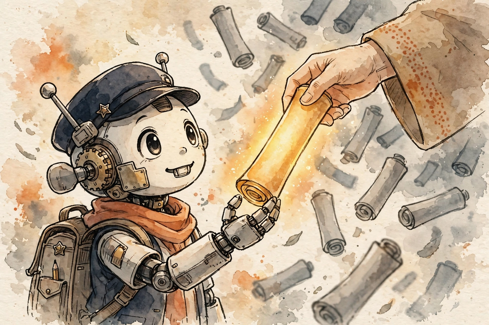

The SFT mechanism is trivial; the data is everything. This guide covers the quality-vs-quantity evidence, the four-stage curation pipeline, decontamination craft, and the gradient-mix math that makes token-count budgeting non-negotiable — with the failure modes interviewers actually probe.

Builds on: B1 — SFT mechanics. The exact idea being reused: SFT is behavior cloning on assistant turns, with cross-entropy computed only on response tokens. That recap is now the whole lesson — because the model clones behavior, the dataset is not fuel for the model, it is the model. Everything here is about choosing what gets cloned. (Tonight's 5pm drill deepens exactly this lesson.)
Two experiments, both with clean numbers, both saying the same thing.
LIMA (Zhou et al., 2023): 65B-parameter LLaMA, fine-tuned with the standard supervised loss on exactly 1,000 carefully curated prompts and responses — 750 from community Q&A forums, 250 authored by the researchers themselves. No RLHF, no preference modeling. In a controlled human study on 300 test prompts, LIMA's responses were equivalent to or preferred over GPT-4 in 43% of cases, and it beat DaVinci-003 (trained with RLHF) head-to-head. The knowledge was already in the weights; the 1,000 examples just elicited the right subdistribution of formats.
AlpaGasus (Chen et al., 2023, ICLR 2024): the mirror experiment. Alpaca's 52k instruction examples were scored 1–5 by a strong LLM judge; only the top 9k were kept. AlpaGasus-9k significantly outperformed the full Alpaca-52k on every test set (Vicuna, Koala, WizardLM, Self-Instruct) — and trained 5.7× faster: 14 minutes instead of 80 for a 7B model. The 52k wasn't just redundant; much of it was actively harmful.
Stage 1 — Sourcing. Human-authored (LIMA's 250 researcher-written: gold standard, most expensive). Distilled from stronger models (Alpaca's 52k from text-davinci-003 — cheap, inherits the teacher's flaws). Synthetic bootstrapping (Self-Instruct: 175 seed tasks → generate → filter → 52k instructions; +33% absolute on Super-NaturalInstructions). The synthetic-loop warning: one distillation round is fine; recursive self-training compounds errors — you are photocopying a photocopy.
Stage 2 — Filtering. The AlpaGasus move (LLM judge, keep the top tier), plus dedup — exact and near-dup (MinHash/embedding), because duplicates overweight themselves in the gradient (the same example seen twice is the same as doubling its learning rate). Plus toxicity and PII scrubbing. The trap to name in interviews: the filter's biases become your model's biases.
Stage 3 — Decontamination. Covered in §3 below — it deserves its own section because it is where teams fool themselves at scale.
Stage 4 — Mix design and formatting. Apply the chat template in the pipeline itself — B1's silent killer returns: same template at train and serve, enforced where the data is built. Then balance the mixture: task diversity plus the refusal boundary. Too many refusal examples → over-refusal (last night's mock); too few → unsafe. This is a ratio you tune, not a default you accept.
If your eval questions appear in training, your scores are fiction — and fiction compounds, because model selection, ablations, and launch decisions all read those scores. The craft:
The gradient-mix trap (spaced retrieval from B1). Remember the masked-CE averaging subtlety? It returns here as a data-curation law. The loss averages over response tokens only:
Worked example — a batch of 10 examples: nine with 40-token responses, one with a 600-token response. Token total: 9×40 + 600 = 960. The long example owns 600/960 = 62.5% of the gradient. If it's low-quality — and AlpaGasus found Alpaca's 52k was full of exactly these verbose, sloppy long answers — one bad example steers the batch.
Why 13-grams have no false positives. With a ~50k vocabulary, a random 13-gram collision has probability on the order of 50,000−13 ≈ 10−61 — effectively zero. So any observed match is real contamination, not noise. The threshold is correct by construction; that is why the industry converged on it, and why "but maybe it's a coincidence" is never a valid pushback in a contamination review.
The weakest-link law of coverage. Your miss rate is set by your least-covered capability: ten thousand more coding examples don't fix zero medical-safety examples. Formally, think of it as a max over capabilities of the uncovered fraction — diversity is a coverage metric, not a vibe. LIMA's authors picked their 1,000 for prompt diversity first, and that choice did more work than any other curation decision.
Cover the answers. Say each one aloud until it's clean.
The Superficial Alignment Hypothesis: pretraining learns almost all knowledge and capability; alignment only teaches which subdistribution of formats to use with users. SFT elicits behavior, it doesn't install knowledge — so a small, excellent demonstration set suffices.
It proves selection is the active ingredient, not count: the 9k were quality-filtered from the 52k, and they also beat a random 9k subset. The 52k contained actively harmful low-quality examples, and filtering cut training time 5.7×.
600 / (360 + 600) = 62.5%, because masked CE averages over response tokens only. Dangerous because verbose-but-mediocre answers are common in scraped data — one bad example steers the batch. Budget in tokens, stratify by length.
A random 13-gram collision over a ~50k vocabulary has probability ~50k−13 ≈ 10−61 — effectively zero. Any match is real contamination by construction, never coincidence.
Stage 4 — mix design. The refusal boundary is imbalanced: too many refusal examples taught "refuse when uncertain." Fix: rebalance with compliant examples near the refusal boundary, verify with a held-out over-refusal benchmark comparing refusal rates pre/post SFT.
SFT clones behavior, so 200k unfiltered pairs teach confident wrongness and the forum's style quirks — AlpaGasus showed 9k filtered beats 52k raw. We'd be paying 5.7× the training cost to make the model worse.
Error compounding and diversity collapse — the photocopy-of-a-photocopy regime. One distillation round from a stronger model is fine; recursive self-training amplifies the teacher's errors and narrows the output distribution each round.
Training data swallowed the benchmark — contamination confirmed. Quarantine: identify the source documents, remove them, re-run decontamination (n-gram + embedding near-dup against all evals), and re-evaluate on the clean subset before trusting any score.
"SFT data is the product. LIMA aligned a 65B model with a thousand curated examples because SFT teaches the shape of assistance, not new knowledge — so you curate for diversity, response quality, and honesty: filter hard, dedup, decontaminate against your evals with n-gram overlap, and budget by response tokens rather than example counts, because masked loss lets long responses dominate the gradient mix."